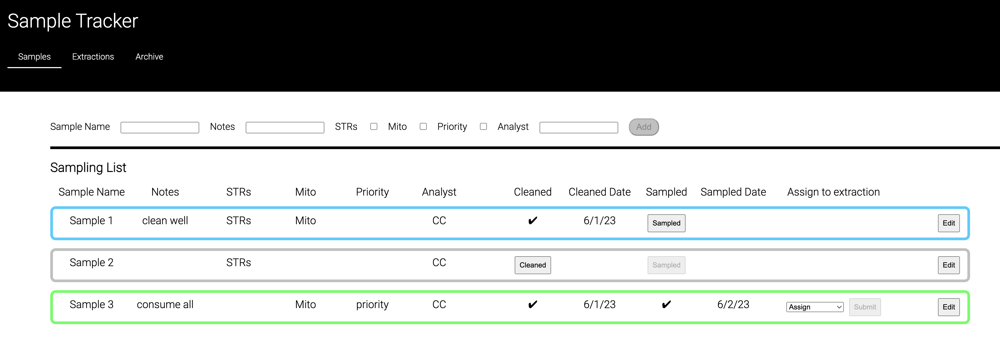

C
a
r
About Me
A former forensic scientist with a passion for creativity, I found the perfect balance of logic and art in web development. I am currently a web developer at a government agency, working to redesign and improve a number of internal sites. I also enjoy illustrating, writing, and comedy.

Based on previous experience as a lab scientist, I created a proof-of-concept application to track the progress of samples being processed. The application features an intuitive user interface to allow users to input and edit sample details. Visual cues help users quickly determine next steps in the sampling workflow.
MongoDB, Mongoose, Express.js, AngularJS, Node.js
A full-stack organizational application to easily visualize, organize, and locate saved bookmarks for web development learning tools.
Ruby on Rails

Determined to make pattern-reading easier while knitting a sweater, I created a tool that shows instructions for each stitch upon hover, counts the number of stitches in a highlighted section, and marks off completed rows, making the pattern-reading process much faster.
CSS, Javascript

Developed a full-stack application to allow users to create savings accounts, allocate specified amounts into the accounts, and track deposits and withdrawals on the accounts.
MongoDB, Mongoose, Express.js, AngularJS, Node.js

I love creating CSS illustrations.
n
e
Web Developer